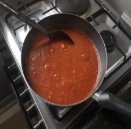

← Volver al módulo 1

Salsa para Pizza
Salsa casera ideal para pizzas, hecha con tomates frescos, extracto de tomate, albahaca y especias.
Ingredientes
- 7 tomates grandes y frescos
- 2 latas de extracto de tomate
- 2 cebollas blancas medianas
- 3 ramitas de albahaca
- 3 dientes de ajo
- 15 g de azúcar
- Orégano c/n
- Aceite de oliva c/n
- Sal c/n
Preparación
Lavar bien los tomates y hacer un corte en forma de cruz en la base de cada uno.
Colocar los tomates en agua caliente por unos minutos, retirar, pelar y quitar semillas.
Cortar los tomates en pedazos y licuarlos.
En una sartén, añadir un poco de aceite de oliva y sofreír la cebolla y el ajo hasta dorar.
Agregar el tomate licuado, extracto de tomate, sal, azúcar, albahaca y orégano. Cocinar por unos minutos hasta que la salsa esté lista.